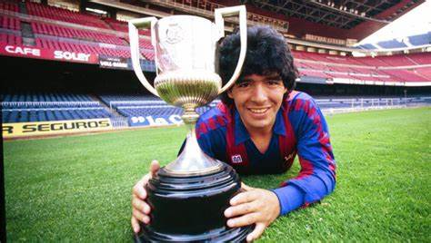
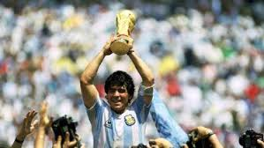

El futbolista más popular de Argentina nació, según consta en el Registro Civil, el día 30 de octubre de 1960 en Lanús, aunque todos lo identifiquen como el Pelusa de Villa Fiorito, donde transcurrió su infancia y desde donde saltó a la fama. A los nueve años inició su romance con el fútbol, cuando actuaba en un equipo infantil conocido como Los Cebollitas. Don Diego, su padre, regentaba una canchita en el barrio y dirigía el equipo Estrella Roja, al que Diego hijo accedió siendo adolescente y a despecho de sus compañeros de más edad. Estudió en el colegio comercial Avellaneda, pero no terminó el primer año del secundario, pues pasaba sus horas haciendo jueguitos (casi malabares) con la pelota. Fichado por Argentinos Juniors, debutó en la primera división en 1976, diez días antes de cumplir dieciséis años. Siguió jugando en Argentinos Juniors hasta 1980, y si bien su equipo no obtuvo ningún campeonato, Maradona fue el máximo goleador de los torneos argentinos de los años 1978, 1979 y 1980. En 1979 formó parte de la selección juvenil que ganó el campeonato del mundo. En 1981 pasó al Boca Juniors (el River Plate también intentó contratarlo), equipo con el que salió campeón ese mismo año.
a por entonces los clubes del viejo continente eran el destino natural de las grandes promesas del fútbol americano, y Maradona era la más destacada. Contratado en 1982 por el Fútbol Club Barcelona por 1.200 millones de pesetas (7,2 millones de euros, una cifra astronómica en la época), consiguió con los azulgranas la Copa de la Liga, la Copa del Rey (ambas en 1983) y la Supercopa de España (1984), pero una hepatitis y una lesión importante perjudicaron su rendimiento. De nuevo por una cantidad astronómica pasó en 1984 al Nápoles, con el que ganó las ligas de 1987 y 1990, la copa UEFA de 1989 y la Supercopa de Italia de 1991. Con la camiseta del F. C. Barcelona Durante su etapa italiana contrajo matrimonio con Claudia Villafañe, de la que tendría dos hijas, Dalma y Giannina. Maradona permaneció en el Nápoles hasta 1991, año en que un control antidopaje detectó consumo de cocaína, por lo que fue suspendido durante quince meses. Poco después fue detenido en Buenos Aires en una redada policial. El 28 de abril de 1992 quedó en libertad y tuvo que afrontar una acusación de suministro y tenencia de drogas. Su carrera internacional finalizó tormentosamente en el Sevilla, equipo con el que no llegó a completar la temporada 1992-1993. Cuando regresó a Argentina tras su experiencia europea, actuó en el club rosarino Newell's Old Boys (1993-1994) y, después de cumplir la suspensión impuesta en 1994 por la autoridad futbolística internacional (FIFA), volvió a vestir la camiseta de Boca Juniors en 1995, en una temporada irregular en cuanto a su rendimiento. En octubre de 1997 anunció su retirada definitiva después de, una vez más, dar positivo en un control antidopaje.
Con la selección argentina, Maradona había lucido ya su magia en el combinado que ganó el campeonato mundial juvenil en Japón (1979). En la categoría absoluta, Maradona formó parte de las selecciones nacionales que participaron en cuatro campeonatos mundiales: los de España (1982), México (1986), Italia (1990) y Estados Unidos (1994). Se alzó con el campeonato del mundo disputado en México (1986) y con el subcampeonato en Italia (1990). En el mundial de Estados Unidos (1994) sólo llegó a disputar dos partidos; tras el segundo, dio positivo en un control antidopaje y fue suspendido. Maradona besa la copa del mundo (México, 1986) Donde su figura brilló con mayor intensidad fue sin duda en el mundial de México, cuando su capacidad de arrastrar a toda la defensa del equipo rival con su impresionante facilidad para la gambeta y proyección dejó pasmados a los millones de aficionados que seguían el campeonato a través de la televisión. Particularmente memorable fue su actuación en los cuartos de final: cuatros años después de la Guerra de las Malvinas, ingleses y argentinos se enfrentaban en un partido de máxima rivalidad, que terminó con la victoria de los albicelestes por 2 a 1, con dos goles de Maradona. El primero de ellos debió haber sido anulado (Maradona metió con el puño un balón que disputaba al guardameta británico), pero no por ello es menos famoso: al preguntársele después si había marcado el tanto con la mano, Maradona respondió que había sido "la mano de Dios", y con ese nombre pasó a la historia. El segundo, justamente llamado el gol del siglo, fue una de sus genialidades difícilmente superables: arrancando de su propio campo, Maradona dribló, uno tras otro, a cinco jugadores ingleses y al portero, y marcó de un zurdazo. El gol del siglo (Argentina - Inglaterra, México, 1986) Profesionalmente, tras su retiro ejerció como entrenador, directivo del Boca Juniors, comentarista deportivo y presentador de televisión. A pesar de los numerosos escándalos y polémicas que protagonizó durante y después de su carrera deportiva, Maradona siguió siendo idolatrado en su país. El Pelusa supo emocionar a los amantes del fútbol y se ganó un lugar en la historia de este deporte. La canción que compuso Fito Páez (Dale alegría a mi corazón) y el tango Mago Diego, de Enrique Bugatti, son algunos de los homenajes que sus compatriotas le dedicaron. En 2008 fue nombrado director técnico de la selección argentina de fútbol, y su gestión, como cabía esperar, fue controvertida: pese a contar con figuras de la talla de Leo Messi, a quien reconoció como su sucesor, el combinado albiceleste no pasó de los cuartos de final en el mundial de Sudáfrica de 2010. Su poco exitosa trayectoria como entrenador continuó en los Emiratos Árabes Unidos, Bielorrusia, México y finalmente en su Argentina natal; ejercía como técnico del Gimnasia La Plata cuando, con 60 años, falleció por un súbito empeoramiento de su delicada salud.
